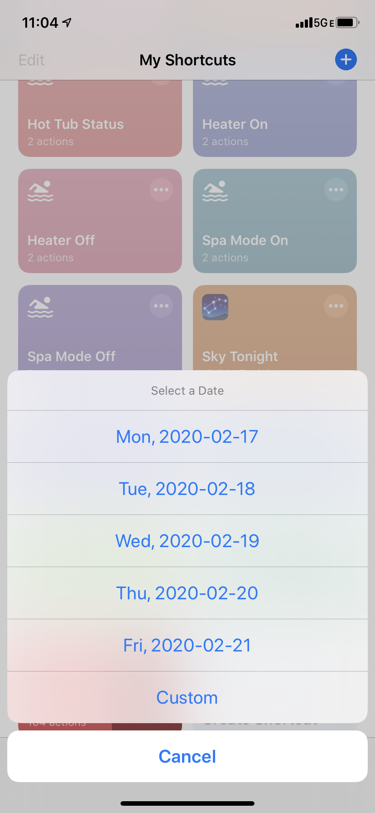
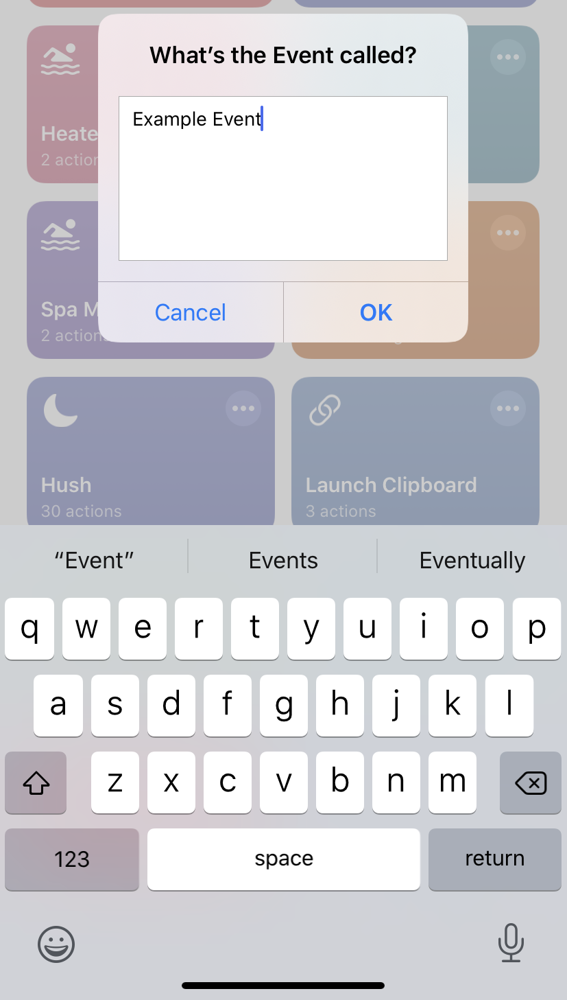
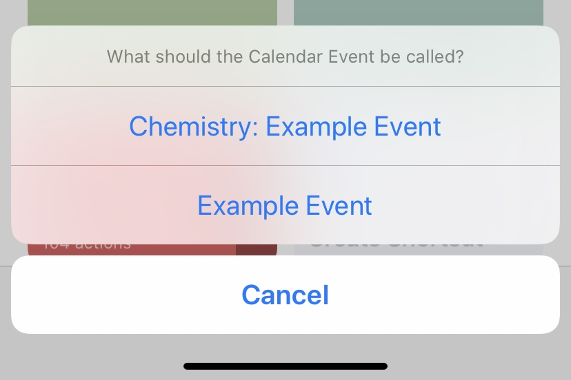
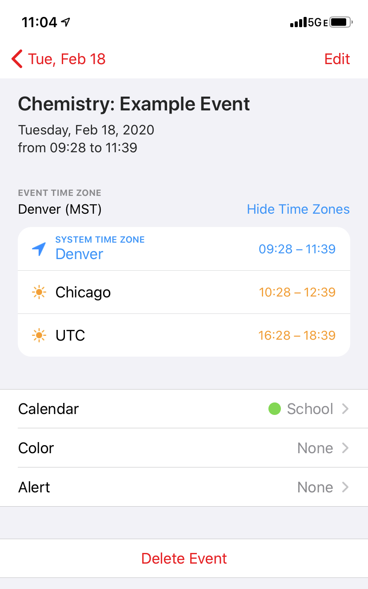

SOI Scheduler
A Siri Shortcut to schedule events happening at the Don Tyson School of Innovation.
Intended to be used to schedule events during class periods: e.g. History Exam during 4B.
Installation
You'll need to install two shortcuts (a classic two for one)
The Get Upcoming Weekdays Shortcut acts as a helper tool to the SOI Scheduler, and the scheduler won't work without it. It's best to install Get Upcoming Weekdays first.
After installing the SOI Scheduler, you'll be presented with 9 screens: the first 8 ask what classes you have (1A, 2A, etc), and the last screen asks what calendar to put your events on.
Usage
| Upon running the shortcut, it'll ask you what date the event takes place on. If the date you want isn't on the list, tap Custom for more. |  |
| After picking a date, it'll ask you what class the event falls on (or primetime if it's Wednesday). |

|
| It'll then ask what the event is called. An example could be "Unit 5 Exam". |  |
| If the class selected is not a primetime, it'll ask if you want to prefix the class name to the event title. Just click whichever one you want. |  |
| After that, the shortcut will be done, and you can find your event in your calendar app of choice! |  |
If there are any issues, feel free to email me at lucas@lkellar.org